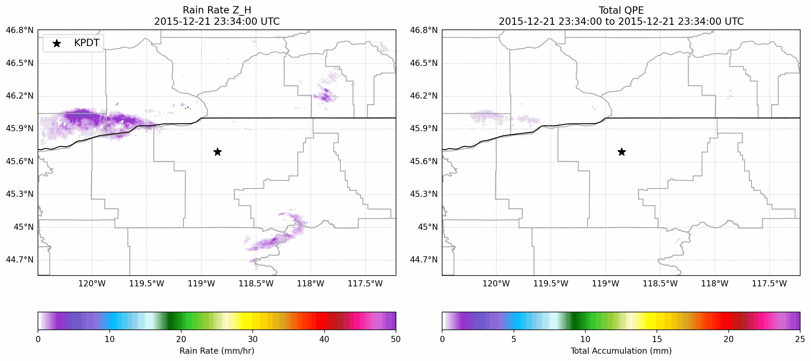

Meteorological Radar Scientist
Rainmaker Technology Corporation, Norman, OK
Currently, I am a Radar Scientist working on the research team at Rainmaker Technology Corporation. Our end goal within Rainmaker is to support sustainable water resource management through cloud seeding operations within the United State and internationally. As part of the mission, we must validate our cloud seeding missions through robust observational analysis, which is where my expertise in radar meteorology comes into play. My main goal is to design and optimize radar-based quantitative precipitation estimation such that it can be effectively used to assess and improve cloud seeding operations. This is accomplished through quality control, processing, analysis, and visualization of radar and other meteorological data in both realtime and post-event modes.
